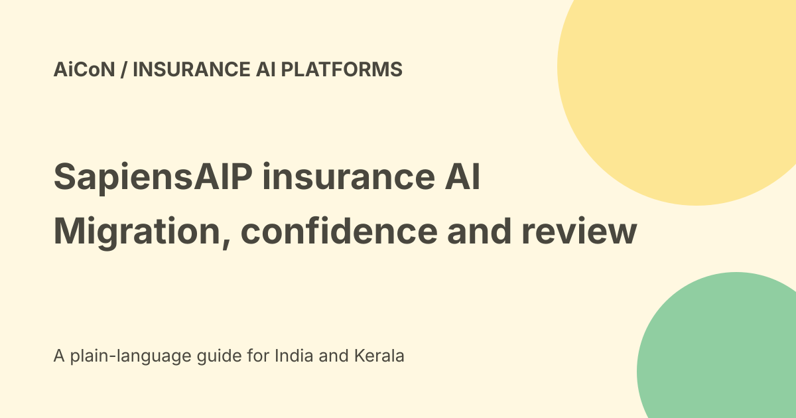

SapiensAIP: insurance AI, migration and human review
Sapiens announced its Autonomous Insurance Platform, SapiensAIP, on 14 September 2026. It is described as a SaaS platform extending the company's core insurance products. It is enterprise software for insurers, not a free app that approves a customer's insurance claim.

What the platform covers
The launch names underwriting, policy, billing, claims and customer engagement. It describes a persona-based experience layer, an intelligence layer for agent workflows and a foundation based on insurance-domain knowledge.
Those are architectural and product claims. A platform announcement does not establish every module in your insurer's deployed system.
Migration Hub
Sapiens says Migration Hub handles profiling, mapping, validation and extraction of legacy data. It describes AI suggesting mappings with confidence scores for customer subject-matter experts to review.
A confidence score is not a warranty that an insurance record moved correctly. Check policy dates, coverage, exclusions, beneficiary information and financial totals against the source.
Configuration Hub
The release describes mapping requirements and documents to fields and producing auditable decisions that teams review and approve.
Marketing wording about any format or system does not prove compatibility with every real input. Test scanned documents, tables, ambiguous rules and missing information in your actual environment.
Human oversight is part of the launch
The announcement describes retaining human oversight of transformations and approving what moves forward. It does not support a claim that all core decisions should run unattended.
Insurance can affect payouts, eligibility and customer rights. Keep approval, appeal and exception handling separate from model confidence.
Customer evaluation is not a completed rollout
The release says Continental General, a Texas-based administrator and carrier, is evaluating the tools to bring on books of business faster and more efficiently.
Evaluating is narrower than a proven production result. No customer deployment, speed-up or claim outcome was independently audited for this guide.
Integration and governance questions
Check how the platform fits your current policy administration system and what must be migrated or configured. Ask which actions are read-only and which can change records.
Trace each result to the original data and rule. Keep version history, rollback and logs. A shared platform can still contain stale or contradictory records.
A controlled insurer pilot
- Select one narrow migration or configuration task.
- Use approved, masked sample records.
- Define required fields and reconciliation checks.
- Compare proposed mappings with expert labels.
- Review low and high confidence errors alike.
- Test conflicting documents and missing values.
- Confirm review roles and audit exports.
- Practise rollback before production.
- Measure total review effort and accuracy.
India and regulatory scope
The checked announcement does not establish an India deployment region, Malayalam support or compliance approval for a particular Indian insurer.
Obtain current contracts, processing locations, security reports and applicable regulatory review. Global insurance experience is not a substitute for your own obligations.
Price and free verdict
No final public tariff, free self-service tier or INR quote was established in the sources checked. Licensing, migration, configuration, support and integrations may have different terms.
No demo was requested, customer data uploaded, account connected or contract signed. Ask for a scoped proposal before relying on a cost estimate.
Privacy and source restrictions
Claims and underwriting files can contain medical, financial and identity details. Restrict access by role and purpose, and check retention, deletion and subprocessors.
A model's ability to read a file does not mean it may disclose the file or use it to make an unrelated decision.
What changed since the original post?
We explain the actual migration and configuration roles, retain human-review wording and separate an evaluation customer from a verified deployment. India hosting and pricing remain unresolved.
Frequently asked questions
Is this a consumer claims app?
No. The announcement describes enterprise insurance software.
Can confidence replace review?
No.
Was a production migration tested?
No.
Sources: Official SapiensAIP launch · Official platform-strategy explanation. Checked 7 October 2026.